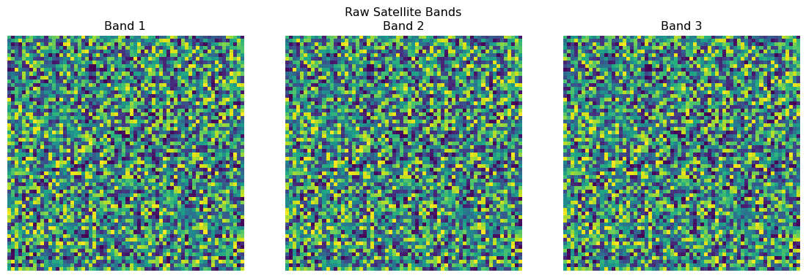
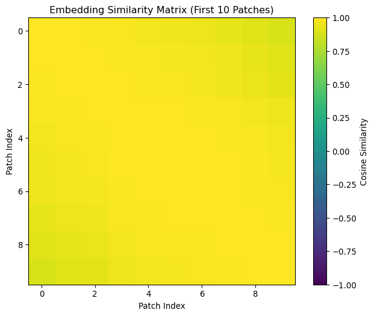

# GeogFM package init (Week 1)
# Tangles to `geogfm/__init__.py`
# Provides base package visibility for data + core modulesIntroduction
Today we’re building a complete pipeline that transforms raw satellite imagery into model-ready embeddings. This mirrors how Large Language Models process text: raw text → tokens → embeddings. Our geospatial version: raw GeoTIFF → patches → embeddings.
Course Roadmap Mapping
This week’s work in the broader GFM plan.
| Week | Stage | Focus | You will build (geogfm) | Library tools | Outcome |
|---|---|---|---|---|---|
| 1 | Stage 1: Build GFM Architecture | Data Foundations | core/config.py; data/datasets/stac_dataset.py; data/transforms/{normalization.py, patchify.py}; data/loaders.py |
torch.utils.data.Dataset/DataLoader, rasterio, numpy |
Config-driven dataloaders that yield normalized patches |
Weekly goals
- Implement a minimal dataset, transforms, and dataloaders
- Normalize channels; extract patches deterministically
- Verify shapes/CRS/stats prints; run a tiny DataLoader
Session Outline (and Tangled Code)
- Concepts → Components mapping
- Configuration schemas →
core/config.py - Normalization and patchifying transforms →
data/transforms/{normalization.py, patchify.py} - Minimal STAC-like dataset →
data/datasets/stac_dataset.py - DataLoader builders →
data/loaders.py - Package init files →
geogfm/__init__.pyand subpackages
- Configuration schemas →
Package inits
# Core subpackage init (Week 1)
# Tangles to `geogfm/core/__init__.py`
# Exposes config schemas# Data subpackage init (Week 1)
# Tangles to `geogfm/data/__init__.py`
# Exposes datasets, loaders, and transforms# Datasets init (Week 1)
# Tangles to `geogfm/data/datasets/__init__.py`
# Exposes minimal STAC-like dataset# Transforms init (Week 1)
# Tangles to `geogfm/data/transforms/__init__.py`
# Exposes normalization and patchify transforms1) Typed Configs → geogfm/core/config.py
# Typed configuration schemas (Week 1)
# Tangles to `geogfm/core/config.py`
from __future__ import annotations
from dataclasses import dataclass, field
from typing import Dict, Any, Optional
@dataclass
class ModelConfig:
architecture: str = "gfm_vit"
in_channels: int = 3
image_size: int = 64
patch_size: int = 16
embed_dim: int = 128
depth: int = 4
num_heads: int = 4
mlp_ratio: float = 4.0
@dataclass
class DataConfig:
dataset: str = "stac"
root_dir: str = "data/out" # or a small sample dir
split: str = "train"
image_size: int = 64
in_channels: int = 3
length: int = 64 # synthetic length fallback
num_workers: int = 0
batch_size: int = 8
seed: int = 42
@dataclass
class TrainConfig:
epochs: int = 1
batch_size: int = 8
optimizer: Dict[str, Any] = field(
default_factory=lambda: {"name": "adamw", "lr": 2e-4})
device: str = "cpu"2) Normalization Transform → geogfm/data/transforms/normalization.py
# Channel-wise normalization utilities (Week 1)
# Tangles to `geogfm/data/transforms/normalization.py`
from __future__ import annotations
import numpy as np
from typing import Tuple, Dict, Any, Optional
Array = np.ndarray
def minmax_normalize(data: Array, global_min: Optional[Array] = None, global_max: Optional[Array] = None) -> tuple[Array, dict]:
bands, height, width = data.shape
normalized = np.zeros_like(data, dtype=np.float32)
if global_min is None or global_max is None:
mins = np.array([data[i].min() for i in range(bands)], dtype=np.float32)
maxs = np.array([data[i].max() for i in range(bands)], dtype=np.float32)
src = "local"
else:
mins, maxs, src = global_min.astype(np.float32), global_max.astype(np.float32), "global"
for i in range(bands):
rng = maxs[i] - mins[i]
if rng > 0:
normalized[i] = (data[i] - mins[i]) / rng
else:
normalized[i] = 0
stats = {"source": src, "mins": mins, "maxs": maxs, "output_range": (float(normalized.min()), float(normalized.max()))}
return normalized, stats
def zscore_normalize(data: Array, global_mean: Optional[Array] = None, global_std: Optional[Array] = None) -> tuple[Array, dict]:
bands, height, width = data.shape
normalized = np.zeros_like(data, dtype=np.float32)
if global_mean is None or global_std is None:
means = np.array([data[i].mean() for i in range(bands)], dtype=np.float32)
stds = np.array([data[i].std() for i in range(bands)], dtype=np.float32)
src = "local"
else:
means, stds, src = global_mean.astype(np.float32), global_std.astype(np.float32), "global"
for i in range(bands):
if stds[i] > 0:
normalized[i] = (data[i] - means[i]) / stds[i]
else:
normalized[i] = 0
stats = {"source": src, "means": means, "stds": stds, "output_mean": float(normalized.mean()), "output_std": float(normalized.std())}
return normalized, stats4) Minimal STAC-like Dataset → geogfm/data/datasets/stac_dataset.py
# Minimal STAC-like dataset (Week 1)
# Tangles to `geogfm/data/datasets/stac_dataset.py`
#| auto-imports: true
from __future__ import annotations
from typing import List, Optional
from pathlib import Path
import random
import numpy as np
import torch
from torch.utils.data import Dataset
import rasterio as rio
class StacLikeDataset(Dataset):
"""Minimal dataset reading GeoTIFF files under a directory, or generating synthetic data.
Returns images sized to (C, H, W) where H=W=image_size and divisible by patch size.
"""
def __init__(self, root_dir: str, split: str = "train", image_size: int = 64, in_channels: int = 3, length: int = 64, seed: int = 42):
self.root = Path(root_dir)
self.split = split
self.image_size = int(image_size)
self.in_channels = int(in_channels)
self.length = int(length)
self.rng = random.Random(seed)
self.files: List[Path] = []
if self.root.exists():
for p in self.root.rglob("*.tif"):
self.files.append(p)
if split == "val":
self.files = self.files[::5]
elif split == "train":
self.files = [p for i, p in enumerate(self.files) if i % 5 != 0]
def __len__(self) -> int:
return max(len(self.files), self.length)
def _load_or_synthesize(self, idx: int) -> np.ndarray:
if self.files:
path = self.files[idx % len(self.files)]
with rio.open(path) as src:
arr = src.read(out_shape=(min(self.in_channels, src.count), self.image_size, self.image_size))
if arr.shape[0] < self.in_channels:
pad = np.zeros((self.in_channels - arr.shape[0], self.image_size, self.image_size), dtype=arr.dtype)
arr = np.concatenate([arr, pad], axis=0)
return arr.astype(np.float32)
# synthetic fallback
self.rng.seed(idx)
return np.random.rand(self.in_channels, self.image_size, self.image_size).astype(np.float32)
def __getitem__(self, idx: int) -> torch.Tensor:
arr = self._load_or_synthesize(idx)
return torch.from_numpy(arr)5) DataLoader Builders → geogfm/data/loaders.py
# DataLoader builders (Week 1)
# Tangles to `geogfm/data/loaders.py`
#| eval: false
from __future__ import annotations
from typing import Tuple
from torch.utils.data import DataLoader
from geogfm.core.config import DataConfig
from geogfm.data.datasets.stac_dataset import StacLikeDataset
def build_dataloader(cfg: DataConfig) -> Tuple[DataLoader, DataLoader]:
train_ds = StacLikeDataset(cfg.root_dir, split="train", image_size=cfg.image_size, in_channels=cfg.in_channels, length=cfg.length, seed=cfg.seed)
val_ds = StacLikeDataset(cfg.root_dir, split="val", image_size=cfg.image_size, in_channels=cfg.in_channels, length=max(8, cfg.length // 5), seed=cfg.seed)
train_dl = DataLoader(train_ds, batch_size=cfg.batch_size, shuffle=True, num_workers=cfg.num_workers, pin_memory=False)
val_dl = DataLoader(val_ds, batch_size=cfg.batch_size, shuffle=False, num_workers=cfg.num_workers, pin_memory=False)
return train_dl, val_dlLearning Objectives
By building this pipeline, you will: - Implement GeoTIFF loading and preprocessing functions - Create patch extraction with spatial metadata - Build tensor normalization and encoding functions
- Construct a PyTorch DataLoader for model training - Connect to a simple embedding layer to verify end-to-end functionality
Session Roadmap
flowchart TD
A["Setup & GeoTIFF Loading"] --> B["Geo Preprocessing Functions"]
B --> C["Patch Extraction with Metadata"]
C --> D["Tensor Operations & Normalization"]
D --> E["DataLoader Construction"]
E --> F["Embedding Layer Integration"]
F --> G["End-to-End Pipeline Test"]
Setting Up
Let’s establish our development environment and define the core constants we’ll use throughout.
Imports and Configuration
import os
import random
from pathlib import Path
import numpy as np
import torch
import torch.nn as nn
from torch.utils.data import Dataset, DataLoader
import rasterio as rio
import matplotlib.pyplot as plt
from typing import Tuple, Dict, Any
# Set seeds for reproducibility
SEED = 42
random.seed(SEED)
np.random.seed(SEED)
torch.manual_seed(SEED)
# Pipeline constants
PATCH_SIZE = 64
STRIDE = 32 # 50% overlap
BATCH_SIZE = 8
EMBEDDING_DIM = 256
print(f"✓ Environment setup complete")
print(f"✓ Patch size: {PATCH_SIZE}x{PATCH_SIZE}")
print(f"✓ Stride: {STRIDE} (overlap: {(PATCH_SIZE-STRIDE)/PATCH_SIZE*100:.0f}%)")✓ Environment setup complete
✓ Patch size: 64x64
✓ Stride: 32 (overlap: 50%)Data Preparation
# Set up data paths - use book/data for course sample data
if "__file__" in globals():
# From chapters folder, go up 2 levels to book folder, then to data
DATA_DIR = Path(__file__).parent.parent / "data"
else:
# Fallback for interactive environments - look for book folder
current = Path.cwd()
while current.name not in ["book", "geoAI"] and current.parent != current:
current = current.parent
if current.name == "book":
DATA_DIR = current / "data"
elif current.name == "geoAI":
DATA_DIR = current / "book" / "data"
else:
DATA_DIR = Path("data")
DATA_DIR.mkdir(exist_ok=True)
SAMPLE_PATH = DATA_DIR / "landcover_sample.tif"
# Verify data file exists
if not SAMPLE_PATH.exists():
raise FileNotFoundError(f"Data file not found at {SAMPLE_PATH}. Please ensure the landcover_sample.tif file is available in the data directory.")
print(f"✓ Data ready: {SAMPLE_PATH.name}")
print(f"✓ File size: {SAMPLE_PATH.stat().st_size / 1024:.1f} KB")
print(f"✓ Full path: {SAMPLE_PATH}")✓ Data ready: landcover_sample.tif
✓ File size: 12.6 KB
✓ Full path: /Users/kellycaylor/dev/geoAI/book/data/landcover_sample.tifStep 1: GeoTIFF Loading and Inspection
Goal: Build a function that loads and extracts essential information from any GeoTIFF.
🛠️ Build It: GeoTIFF Loader Function
Your task: Complete this function to load a GeoTIFF and return both the data and metadata.
def load_geotiff(file_path: Path) -> Tuple[np.ndarray, Dict[str, Any]]:
"""
Load a GeoTIFF and extract data + metadata.
Returns:
data: (bands, height, width) array
metadata: dict with CRS, transform, resolution, etc.
"""
with rio.open(file_path) as src:
# TODO: Load the data array
data = src.read() # YOUR CODE: Load raster data
# TODO: Extract metadata
metadata = {
'crs': src.crs, # YOUR CODE: Get coordinate reference system
'transform': src.transform, # YOUR CODE: Get geospatial transform
'shape': data.shape, # YOUR CODE: Get array dimensions
'dtype': data.dtype, # YOUR CODE: Get data type
'resolution': src.res, # YOUR CODE: Get pixel resolution
'bounds': src.bounds, # YOUR CODE: Get spatial bounds
}
return data, metadata# Test your function
data, metadata = load_geotiff(SAMPLE_PATH)
print(f"✓ Loaded shape: {data.shape}")
print(f"✓ Data type: {metadata['dtype']}")
print(f"✓ Resolution: {metadata['resolution']}")
print(f"✓ CRS: {metadata['crs']}")✓ Loaded shape: (3, 64, 64)
✓ Data type: uint8
✓ Resolution: (0.25, 0.25)
✓ CRS: PROJCS["Projection: Transverse Mercator; Datum: WGS84; Ellipsoid: WGS84",GEOGCS["WGS 84",DATUM["WGS_1984",SPHEROID["WGS 84",6378137,298.257223563,AUTHORITY["EPSG","7030"]],AUTHORITY["EPSG","6326"]],PRIMEM["Greenwich",0],UNIT["degree",0.0174532925199433,AUTHORITY["EPSG","9122"]],AUTHORITY["EPSG","4326"]],PROJECTION["Transverse_Mercator"],PARAMETER["latitude_of_origin",0],PARAMETER["central_meridian",19],PARAMETER["scale_factor",0.9993],PARAMETER["false_easting",500000],PARAMETER["false_northing",-5300000],UNIT["metre",1,AUTHORITY["EPSG","9001"]],AXIS["Easting",EAST],AXIS["Northing",NORTH]]🔍 Verify It: Inspect Your Data
# Examine the data you loaded
bands, height, width = data.shape
print(f"Image dimensions: {height}×{width} pixels")
print(f"Number of bands: {bands}")
print(f"Value ranges per band:")
for i, band in enumerate(data):
print(f" Band {i+1}: {band.min():.0f} to {band.max():.0f}")
# Quick visualization
fig, axes = plt.subplots(1, bands, figsize=(12, 4))
if bands == 1:
axes = [axes]
for i, band in enumerate(data):
axes[i].imshow(band, cmap='viridis')
axes[i].set_title(f'Band {i+1}')
axes[i].axis('off')
plt.suptitle('Raw Satellite Bands')
plt.tight_layout()
plt.show()Image dimensions: 64×64 pixels
Number of bands: 3
Value ranges per band:
Band 1: 0 to 254
Band 2: 0 to 254
Band 3: 0 to 254
Step 2: Geo Preprocessing Functions
Goal: Build preprocessing functions that operate on the full image before patch extraction.
🛠️ Build It: Normalization Functions
We’ll create two normalization functions that can work with either local statistics (calculated from the input data) or global statistics (pre-computed from a training dataset). Global statistics ensure consistent normalization across different image tiles and are crucial for foundation model training.
Why use global statistics? When training on multiple images, each tile might have different value ranges. Using global statistics ensures that the same pixel value represents the same relative intensity across all training data.
Min-Max Normalization Function
def minmax_normalize(data: np.ndarray,
global_min: np.ndarray = None,
global_max: np.ndarray = None) -> tuple[np.ndarray, dict]:
"""
Min-max normalize spectral bands to [0,1] range.
Args:
data: (bands, height, width) array
global_min: Optional (bands,) array of global minimums per band
global_max: Optional (bands,) array of global maximums per band
Returns:
normalized: (bands, height, width) array with values in [0,1]
stats: Dictionary containing the min/max values used
"""
bands, height, width = data.shape
normalized = np.zeros_like(data, dtype=np.float32)
# Use global stats if provided, otherwise calculate from data
if global_min is None or global_max is None:
# Calculate per-band statistics from this data
mins = np.array([data[i].min() for i in range(bands)])
maxs = np.array([data[i].max() for i in range(bands)])
stats_source = "local (calculated from input)"
else:
# Use provided global statistics
mins = global_min
maxs = global_max
stats_source = "global (provided)"
# Apply normalization per band
for i in range(bands):
band_range = maxs[i] - mins[i]
if band_range > 0: # Avoid division by zero
normalized[i] = (data[i] - mins[i]) / band_range
else:
normalized[i] = 0 # Handle constant bands
# Package statistics for inspection
stats = {
'source': stats_source,
'mins': mins,
'maxs': maxs,
'output_range': (normalized.min(), normalized.max())
}
return normalized, statsZ-Score Normalization Function
def zscore_normalize(data: np.ndarray,
global_mean: np.ndarray = None,
global_std: np.ndarray = None) -> tuple[np.ndarray, dict]:
"""
Z-score normalize spectral bands to mean=0, std=1.
Args:
data: (bands, height, width) array
global_mean: Optional (bands,) array of global means per band
global_std: Optional (bands,) array of global standard deviations per band
Returns:
normalized: (bands, height, width) standardized array
stats: Dictionary containing the mean/std values used
"""
bands, height, width = data.shape
normalized = np.zeros_like(data, dtype=np.float32)
# Use global stats if provided, otherwise calculate from data
if global_mean is None or global_std is None:
# Calculate per-band statistics from this data
means = np.array([data[i].mean() for i in range(bands)])
stds = np.array([data[i].std() for i in range(bands)])
stats_source = "local (calculated from input)"
else:
# Use provided global statistics
means = global_mean
stds = global_std
stats_source = "global (provided)"
# Apply normalization per band
for i in range(bands):
if stds[i] > 0: # Avoid division by zero
normalized[i] = (data[i] - means[i]) / stds[i]
else:
normalized[i] = 0 # Handle constant bands
# Package statistics for inspection
stats = {
'source': stats_source,
'means': means,
'stds': stds,
'output_mean': normalized.mean(),
'output_std': normalized.std()
}
return normalized, stats
print("✓ Normalization functions created")
print(" - minmax_normalize: scales to [0,1] range")
print(" - zscore_normalize: standardizes to mean=0, std=1")✓ Normalization functions created
- minmax_normalize: scales to [0,1] range
- zscore_normalize: standardizes to mean=0, std=1Test Both Functions with Local Statistics
# Test min-max normalization with local statistics
minmax_data, minmax_stats = minmax_normalize(data)
print("📊 Min-Max Normalization (local stats):")
print(f" Source: {minmax_stats['source']}")
print(f" Original range: {data.min():.0f} to {data.max():.0f}")
print(f" Normalized range: {minmax_stats['output_range'][0]:.3f} to {minmax_stats['output_range'][1]:.3f}")
print(f" Per-band mins: {minmax_stats['mins']}")
print(f" Per-band maxs: {minmax_stats['maxs']}")
print()
# Test z-score normalization with local statistics
zscore_data, zscore_stats = zscore_normalize(data)
print("📊 Z-Score Normalization (local stats):")
print(f" Source: {zscore_stats['source']}")
print(f" Output mean: {zscore_stats['output_mean']:.6f}")
print(f" Output std: {zscore_stats['output_std']:.6f}")
print(f" Per-band means: {zscore_stats['means']}")
print(f" Per-band stds: {zscore_stats['stds']}")📊 Min-Max Normalization (local stats):
Source: local (calculated from input)
Original range: 0 to 254
Normalized range: 0.000 to 1.000
Per-band mins: [0 0 0]
Per-band maxs: [254 254 254]
📊 Z-Score Normalization (local stats):
Source: local (calculated from input)
Output mean: 0.000000
Output std: 1.000000
Per-band means: [126.14306641 126.14306641 126.14306641]
Per-band stds: [73.10237725 73.10237725 73.10237725]Test with Global Statistics
# Simulate global statistics from a larger dataset
# In practice, these would be pre-computed from your entire training corpus
global_mins = np.array([100, 150, 200]) # Example global minimums per band
global_maxs = np.array([1500, 2000, 2500]) # Example global maximums per band
global_means = np.array([800, 1200, 1600]) # Example global means per band
global_stds = np.array([300, 400, 500]) # Example global standard deviations per band
print("🌍 Testing with Global Statistics:")
print(f" Global mins: {global_mins}")
print(f" Global maxs: {global_maxs}")
print(f" Global means: {global_means}")
print(f" Global stds: {global_stds}")
print()
# Test with global statistics
minmax_global, minmax_global_stats = minmax_normalize(data, global_mins, global_maxs)
zscore_global, zscore_global_stats = zscore_normalize(data, global_means, global_stds)
print("📊 Min-Max with Global Stats:")
print(f" Source: {minmax_global_stats['source']}")
print(f" Output range: {minmax_global_stats['output_range'][0]:.3f} to {minmax_global_stats['output_range'][1]:.3f}")
print()
print("📊 Z-Score with Global Stats:")
print(f" Source: {zscore_global_stats['source']}")
print(f" Output mean: {zscore_global_stats['output_mean']:.3f}")
print(f" Output std: {zscore_global_stats['output_std']:.3f}")🌍 Testing with Global Statistics:
Global mins: [100 150 200]
Global maxs: [1500 2000 2500]
Global means: [ 800 1200 1600]
Global stds: [300 400 500]
📊 Min-Max with Global Stats:
Source: global (provided)
Output range: 0.000 to 0.182
📊 Z-Score with Global Stats:
Source: global (provided)
Output mean: 168.496
Output std: 36.333What to notice: When using global statistics, the output ranges and distributions differ from local normalization. This is expected and ensures consistency across different image tiles in your dataset.
🛠️ Build It: Spatial Cropping Function
# Patch extraction utilities (Week 1)
# Tangles to `geogfm/data/transforms/patchify.py`
#| auto-imports: true
from __future__ import annotations
import numpy as np
Array = np.ndarray
def crop_to_patches(data: Array, patch_size: int, stride: int) -> Array:
"""
Crop image to dimensions that allow complete patch extraction.
Args:
data: (bands, height, width) array
patch_size: size of patches to extract
stride: step size between patches
Returns:
cropped: (bands, new_height, new_width) array
"""
bands, height, width = data.shape
# TODO: Calculate how many complete patches fit
patches_h = (height - patch_size) // stride + 1
patches_w = (width - patch_size) // stride + 1
# TODO: Calculate the required dimensions
new_height = (patches_h - 1) * stride + patch_size
new_width = (patches_w - 1) * stride + patch_size
# TODO: Crop the data
cropped = data[:, :new_height, :new_width]
print(f"✓ Cropped from {height}×{width} to {new_height}×{new_width}")
print(
f"✓ Will generate {patches_h}×{patches_w} = {patches_h*patches_w} patches")
return cropped# Test your cropping function
cropped_data = crop_to_patches(data, 8, STRIDE)✓ Cropped from 64×64 to 40×40
✓ Will generate 2×2 = 4 patchesStep 3: Patch Extraction with Metadata
Goal: Extract patches while preserving spatial context information.
🛠️ Build It: Patch Extraction Function
# Patch extraction with spatial metadata (Week 1)
# Tangles (append) to `geogfm/data/transforms/patchify.py`
#| tangle-mode: append
#| auto-import: true
def extract_patches(
data: Array,
patch_size: int,
stride: int
) -> Array:
"""
Extract patches.
Args:
data: (bands, height, width) normalized array
patch_size: size of patches
stride: step between patches
Returns:
patches: (n_patches, bands, patch_size, patch_size) array
"""
bands, height, width = data.shape
patches = []
for r in range(0, height - patch_size + 1, stride):
for c in range(0, width - patch_size + 1, stride):
patches.append(data[:, r:r+patch_size, c:c+patch_size])
return np.stack(patches, axis=0)
def extract_patches_with_metadata(
data: Array,
patch_size: int,
stride: int,
transform
) -> Tuple[Array, Array]:
"""
Extract patches with their spatial coordinates.
Args:
data: (bands, height, width) normalized array
patch_size: size of patches
stride: step between patches
transform: rasterio transform object
Returns:
patches: (n_patches, bands, patch_size, patch_size) array
coordinates: (n_patches, 4) array of [min_x, min_y, max_x, max_y]
"""
bands, height, width = data.shape
patches = []
coordinates = []
# TODO: Iterate through patch positions
for row in range(0, height - patch_size + 1, stride):
for col in range(0, width - patch_size + 1, stride):
# TODO: Extract patch from all bands
patch = data[:, row:row+patch_size, col:col+patch_size]
patches.append(patch)
# TODO: Calculate real-world coordinates using transform
min_x, max_y = transform * (col, row) # Top-left
max_x, min_y = transform * \
(col + patch_size, row + patch_size) # Bottom-right
coordinates.append([min_x, min_y, max_x, max_y])
patches = np.array(patches)
coordinates = np.array(coordinates)
print(f"✓ Extracted {len(patches)} patches")
print(f"✓ Patch shape: {patches.shape}")
print(f"✓ Coordinate shape: {coordinates.shape}")
return patches, coordinates# Test your patch extraction
patches, coords = extract_patches_with_metadata(
data, 8, 4, metadata['transform']
)
# Visualize a few patches
fig, axes = plt.subplots(2, 4, figsize=(12, 6))
for i in range(8):
row, col = i // 4, i % 4
# Show first band of each patch
axes[row, col].imshow(patches[i, 0], cmap='viridis')
axes[row, col].set_title(f'Patch {i}')
axes[row, col].axis('off')
plt.suptitle('Sample Extracted Patches (Band 1)')
plt.tight_layout()
plt.show()✓ Extracted 225 patches
✓ Patch shape: (225, 3, 8, 8)
✓ Coordinate shape: (225, 4)
# Reconstruction from patches (Week 1)
# Tangles (append) to `geogfm/data/transforms/patchify.py`
#| tangle-mode: append
def reconstruct_from_patches(
patches: Array,
height: int,
width: int,
patch_size: int
) -> Array:
"""
Reassemble a (bands, H, W) image from non-overlapping square patches.
Parameters
----------
patches : Array
Patches in row-major scan order with shape (N, bands, patch_size, patch_size),
where N must equal (height // patch_size) * (width // patch_size).
height : int
Target image height in pixels.
width : int
Target image width in pixels.
patch_size : int
Size of each square patch in pixels. Assumes stride == patch_size (no overlap).
Returns
-------
Array
Reconstructed image of shape (bands, height, width).
Notes
-----
- Assumes patches are laid out left-to-right, top-to-bottom (row-major).
- Ignores any remainder if `height` or `width` is not divisible by `patch_size`
(i.e., only the `grid_h * patch_size` by `grid_w * patch_size` area is filled).
- No blending is performed (because there is no overlap).
Examples
--------
>>> # Suppose height=width=64, patch_size=32, bands=13
>>> # patches.shape == (4, 13, 32, 32), ordered row-major
>>> img = reconstruct_from_patches(patches, 64, 64, 32)
>>> img.shape
(13, 64, 64)
"""
bands = patches.shape[1]
grid_h = height // patch_size
grid_w = width // patch_size
out = np.zeros((bands, height, width), dtype=patches.dtype)
idx = 0
for r in range(grid_h):
for c in range(grid_w):
out[:, r*patch_size:(r+1)*patch_size, c *
patch_size:(c+1)*patch_size] = patches[idx]
idx += 1
return outimport numpy as np
# Let's assume you have already defined reconstruct_from_patches from above
# Example parameters
bands = 3 # e.g., RGB
height = 8 # image height in pixels
width = 8 # image width in pixels
patch_size = 4 # each patch is 4x4 pixels
# Number of patches needed to cover the image (row-major order)
grid_h = height // patch_size
grid_w = width // patch_size
num_patches = grid_h * grid_w
# Create random patches (N, bands, patch_size, patch_size)
patches = np.random.randint(
low=0, high=256,
size=(num_patches, bands, patch_size, patch_size),
dtype=np.uint8
)
print("Patches shape:", patches.shape)
print("First patch (band 0):\n", patches[0, 0])
# Reconstruct the image
reconstructed = reconstruct_from_patches(patches, height, width, patch_size)
print("\nReconstructed image shape:", reconstructed.shape)
print("Top-left 4x4 of reconstructed image, band 0:\n",
reconstructed[0, :4, :4])
# Verify reconstruction matches original patches in correct positions
# The top-left 4x4 region should be identical to the first patch (band 0)
assert np.array_equal(reconstructed[0, :4, :4], patches[0, 0])
print("\nVerification passed: top-left patch matches the original.")Patches shape: (4, 3, 4, 4)
First patch (band 0):
[[102 220 225 95]
[179 61 234 203]
[ 92 3 98 243]
[ 14 149 245 46]]
Reconstructed image shape: (3, 8, 8)
Top-left 4x4 of reconstructed image, band 0:
[[102 220 225 95]
[179 61 234 203]
[ 92 3 98 243]
[ 14 149 245 46]]
Verification passed: top-left patch matches the original.Step 4: Tensor Operations & Metadata Encoding
Goal: Convert numpy arrays to PyTorch tensors and encode metadata.
🛠️ Build It: Metadata Encoder
def encode_metadata(coordinates: np.ndarray) -> np.ndarray:
"""
Encode spatial metadata as features.
Args:
coordinates: (n_patches, 4) array of [min_x, min_y, max_x, max_y]
Returns:
encoded: (n_patches, n_features) array
"""
# TODO: Calculate spatial features
center_x = (coordinates[:, 0] + coordinates[:, 2]) / 2
center_y = (coordinates[:, 1] + coordinates[:, 3]) / 2
width = coordinates[:, 2] - coordinates[:, 0]
height = coordinates[:, 3] - coordinates[:, 1]
area = width * height
# TODO: Normalize spatial features (handle zero std to avoid divide by zero)
def safe_normalize(values):
"""Normalize values, handling zero standard deviation."""
mean_val = values.mean()
std_val = values.std()
if std_val > 0:
return (values - mean_val) / std_val
else:
return np.zeros_like(values) # All values are the same
features = np.column_stack([
safe_normalize(center_x), # Normalized center X
safe_normalize(center_y), # Normalized center Y
safe_normalize(area), # Normalized area (handles constant area)
width / height, # Aspect ratio
])
print(f"✓ Encoded metadata shape: {features.shape}")
print(f"✓ Feature statistics:")
feature_names = ['center_x', 'center_y', 'area', 'aspect_ratio']
for i, name in enumerate(feature_names):
print(
f" {name}: mean={features[:, i].mean():.3f}, std={features[:, i].std():.3f}")
return features.astype(np.float32)# Test metadata encoding
encoded_metadata = encode_metadata(coords)✓ Encoded metadata shape: (225, 4)
✓ Feature statistics:
center_x: mean=0.000, std=1.000
center_y: mean=0.000, std=1.000
area: mean=0.000, std=0.000
aspect_ratio: mean=1.000, std=0.000🛠️ Build It: Tensor Conversion
def create_tensors(patches: np.ndarray, metadata: np.ndarray) -> Tuple[torch.Tensor, torch.Tensor]:
"""
Convert numpy arrays to PyTorch tensors.
Args:
patches: (n_patches, bands, height, width) array
metadata: (n_patches, n_features) array
Returns:
patch_tensors: (n_patches, bands, height, width) tensor
metadata_tensors: (n_patches, n_features) tensor
"""
# TODO: Convert to tensors with appropriate dtypes
patch_tensors = torch.from_numpy(patches).float()
metadata_tensors = torch.from_numpy(metadata).float()
print(f"✓ Patch tensors: {patch_tensors.shape}, dtype: {patch_tensors.dtype}")
print(f"✓ Metadata tensors: {metadata_tensors.shape}, dtype: {metadata_tensors.dtype}")
return patch_tensors, metadata_tensors# Create tensors
patch_tensors, metadata_tensors = create_tensors(patches, encoded_metadata)✓ Patch tensors: torch.Size([4, 3, 4, 4]), dtype: torch.float32
✓ Metadata tensors: torch.Size([225, 4]), dtype: torch.float32Step 5: DataLoader Construction
Goal: Build a PyTorch Dataset and DataLoader for training.
🛠️ Build It: Custom Dataset Class
class GeospatialDataset(Dataset):
"""Dataset for geospatial patches with metadata."""
def __init__(self, patch_tensors: torch.Tensor, metadata_tensors: torch.Tensor):
"""
Args:
patch_tensors: (n_patches, bands, height, width)
metadata_tensors: (n_patches, n_features)
"""
self.patches = patch_tensors
self.metadata = metadata_tensors
# TODO: Create dummy labels for demonstration (in real use, load from file)
self.labels = torch.randint(0, 5, (len(patch_tensors),)) # 5 land cover classes
def __len__(self) -> int:
"""Return number of patches."""
return len(self.patches)
def __getitem__(self, idx: int) -> Tuple[torch.Tensor, torch.Tensor, torch.Tensor]:
"""
Get a single item.
Returns:
patch: (bands, height, width) tensor
metadata: (n_features,) tensor
label: scalar tensor
"""
return self.patches[idx], self.metadata[idx], self.labels[idx]
# Test your dataset
dataset = GeospatialDataset(patch_tensors, metadata_tensors)
print(f"✓ Dataset length: {len(dataset)}")
# Test getting an item
sample_patch, sample_metadata, sample_label = dataset[0]
print(f"✓ Sample patch shape: {sample_patch.shape}")
print(f"✓ Sample metadata shape: {sample_metadata.shape}")
print(f"✓ Sample label: {sample_label.item()}")✓ Dataset length: 4
✓ Sample patch shape: torch.Size([3, 4, 4])
✓ Sample metadata shape: torch.Size([4])
✓ Sample label: 2🛠️ Build It: DataLoader
# TODO: Create DataLoader with appropriate batch size and shuffling
dataloader = DataLoader(
dataset,
batch_size=BATCH_SIZE,
shuffle=True,
num_workers=0, # Set to 0 for compatibility
pin_memory=True if torch.cuda.is_available() else False
)
print(f"✓ DataLoader created with batch size {BATCH_SIZE}")
print(f"✓ Number of batches: {len(dataloader)}")
# Test the DataLoader
for batch_idx, (patches, metadata, labels) in enumerate(dataloader):
print(f"✓ Batch {batch_idx}:")
print(f" Patches: {patches.shape}")
print(f" Metadata: {metadata.shape}")
print(f" Labels: {labels.shape}")
if batch_idx == 1: # Show first two batches
break✓ DataLoader created with batch size 8
✓ Number of batches: 1
✓ Batch 0:
Patches: torch.Size([4, 3, 4, 4])
Metadata: torch.Size([4, 4])
Labels: torch.Size([4])Step 6: Embedding Layer Integration
Goal: Connect to a simple embedding layer to verify end-to-end functionality.
🛠️ Build It: Simple GFM Embedding Layer
class SimpleGFMEmbedding(nn.Module):
"""Simple embedding layer for geospatial patches."""
def __init__(self, input_channels: int, metadata_features: int, embed_dim: int, patch_size: int = 64):
super().__init__()
# TODO: Build adaptive patch encoder based on patch size
if patch_size >= 32:
# Larger patches: multi-layer CNN
kernel1 = min(8, patch_size // 4)
kernel2 = min(4, patch_size // 8)
self.patch_encoder = nn.Sequential(
nn.Conv2d(input_channels, 32, kernel_size=kernel1, stride=kernel1//2),
nn.ReLU(),
nn.Conv2d(32, 64, kernel_size=kernel2, stride=kernel2//2),
nn.ReLU(),
nn.AdaptiveAvgPool2d(1),
nn.Flatten(),
)
else:
# Smaller patches: simpler encoder
kernel = min(4, patch_size // 2)
self.patch_encoder = nn.Sequential(
nn.Conv2d(input_channels, 64, kernel_size=kernel, stride=1),
nn.ReLU(),
nn.AdaptiveAvgPool2d(1),
nn.Flatten(),
)
# TODO: Build metadata encoder
self.metadata_encoder = nn.Sequential(
nn.Linear(metadata_features, 32),
nn.ReLU(),
nn.Linear(32, 32),
)
# TODO: Build fusion layer
# Calculate patch encoder output size
with torch.no_grad():
dummy_patch = torch.randn(1, input_channels, patch_size, patch_size)
patch_feat_size = self.patch_encoder(dummy_patch).shape[1]
self.fusion = nn.Sequential(
nn.Linear(patch_feat_size + 32, embed_dim),
nn.ReLU(),
nn.Linear(embed_dim, embed_dim),
)
def forward(self, patches: torch.Tensor, metadata: torch.Tensor) -> torch.Tensor:
"""
Args:
patches: (batch, channels, height, width)
metadata: (batch, n_features)
Returns:
embeddings: (batch, embed_dim)
"""
# TODO: Encode patches and metadata
patch_features = self.patch_encoder(patches)
metadata_features = self.metadata_encoder(metadata)
# TODO: Fuse features
combined = torch.cat([patch_features, metadata_features], dim=1)
embeddings = self.fusion(combined)
return embeddings
# Create and test the model
model = SimpleGFMEmbedding(
input_channels=bands,
metadata_features=encoded_metadata.shape[1],
embed_dim=EMBEDDING_DIM,
patch_size=PATCH_SIZE
)
print(f"✓ Model created")
print(f"✓ Model parameters: {sum(p.numel() for p in model.parameters()):,}")✓ Model created
✓ Model parameters: 130,848Step 7: End-to-End Pipeline Test
Goal: Run the complete pipeline and verify everything works together.
🛠️ Build It: Complete Pipeline Function
def geotiff_to_embeddings_pipeline(
file_path: Path,
patch_size: int = 8,
stride: int = 4,
batch_size: int = 8,
embed_dim: int = 256
) -> torch.Tensor:
"""
Complete pipeline from GeoTIFF to embeddings.
Args:
file_path: Path to GeoTIFF file
patch_size: Size of patches to extract
stride: Step between patches
batch_size: Batch size for processing
embed_dim: Embedding dimension
Returns:
all_embeddings: (n_patches, embed_dim) tensor
"""
print("🚀 Starting GeoTIFF → Embeddings Pipeline")
# Step 1: Load data
print("📁 Loading GeoTIFF...")
data, metadata = load_geotiff(file_path)
# Step 2: Preprocess
print("🔧 Preprocessing...")
norm_data, norm_stats = minmax_normalize(data)
cropped_data = crop_to_patches(norm_data, patch_size, stride)
# Step 3: Extract patches
print("✂️ Extracting patches...")
patches, coords = extract_patches_with_metadata(cropped_data, patch_size, stride, metadata['transform'])
# Step 4: Encode metadata
print("📊 Encoding metadata...")
encoded_meta = encode_metadata(coords)
# Step 5: Create tensors
print("🔢 Creating tensors...")
patch_tensors, meta_tensors = create_tensors(patches, encoded_meta)
# Step 6: Create dataset and dataloader
print("📦 Creating DataLoader...")
dataset = GeospatialDataset(patch_tensors, meta_tensors)
dataloader = DataLoader(dataset, batch_size=batch_size, shuffle=False)
# Step 7: Create model and generate embeddings
print("🧠 Generating embeddings...")
model = SimpleGFMEmbedding(
input_channels=data.shape[0],
metadata_features=encoded_meta.shape[1],
embed_dim=embed_dim,
patch_size=patch_size
)
model.eval()
all_embeddings = []
with torch.no_grad():
for patches_batch, meta_batch, _ in dataloader:
embeddings = model(patches_batch, meta_batch)
all_embeddings.append(embeddings)
all_embeddings = torch.cat(all_embeddings, dim=0)
print(f"✅ Pipeline complete! Generated {len(all_embeddings)} embeddings")
return all_embeddings
# Run the complete pipeline
embeddings = geotiff_to_embeddings_pipeline(SAMPLE_PATH)
print(f"\n🎉 Final Result:")
print(f"✓ Embeddings shape: {embeddings.shape}")
print(f"✓ Embedding statistics:")
print(f" Mean: {embeddings.mean().item():.4f}")
print(f" Std: {embeddings.std().item():.4f}")
print(f" Min: {embeddings.min().item():.4f}")
print(f" Max: {embeddings.max().item():.4f}")🚀 Starting GeoTIFF → Embeddings Pipeline
📁 Loading GeoTIFF...
🔧 Preprocessing...
✓ Cropped from 64×64 to 64×64
✓ Will generate 15×15 = 225 patches
✂️ Extracting patches...
✓ Extracted 225 patches
✓ Patch shape: (225, 3, 8, 8)
✓ Coordinate shape: (225, 4)
📊 Encoding metadata...
✓ Encoded metadata shape: (225, 4)
✓ Feature statistics:
center_x: mean=0.000, std=1.000
center_y: mean=0.000, std=1.000
area: mean=0.000, std=0.000
aspect_ratio: mean=1.000, std=0.000
🔢 Creating tensors...
✓ Patch tensors: torch.Size([225, 3, 8, 8]), dtype: torch.float32
✓ Metadata tensors: torch.Size([225, 4]), dtype: torch.float32
📦 Creating DataLoader...
🧠 Generating embeddings...
✅ Pipeline complete! Generated 225 embeddings
🎉 Final Result:
✓ Embeddings shape: torch.Size([225, 256])
✓ Embedding statistics:
Mean: -0.0052
Std: 0.0725
Min: -0.2700
Max: 0.3388🔍 Verify It: Pipeline Output Analysis
# Visualize embedding similarities
print("🔍 Analyzing embedding relationships...")
# Check if we have enough embeddings for analysis
if len(embeddings) < 10:
print(f"⚠️ Only {len(embeddings)} embeddings available, using all of them")
sample_size = len(embeddings)
else:
print(f"✓ Using first 10 of {len(embeddings)} embeddings for similarity analysis")
sample_size = 10
if sample_size > 1:
# Compute pairwise cosine similarities
from torch.nn.functional import cosine_similarity
sample_embeddings = embeddings[:sample_size]
similarity_matrix = torch.zeros(sample_size, sample_size)
for i in range(sample_size):
for j in range(sample_size):
if i == j:
similarity_matrix[i, j] = 1.0 # Perfect self-similarity
else:
sim = cosine_similarity(sample_embeddings[i:i+1], sample_embeddings[j:j+1], dim=1)
similarity_matrix[i, j] = sim.item()
# Plot similarity matrix
plt.figure(figsize=(8, 6))
plt.imshow(similarity_matrix.numpy(), cmap='viridis', vmin=-1, vmax=1)
plt.colorbar(label='Cosine Similarity')
plt.title(f'Embedding Similarity Matrix (First {sample_size} Patches)')
plt.xlabel('Patch Index')
plt.ylabel('Patch Index')
plt.show()
print(f"✓ Average similarity: {similarity_matrix.mean().item():.4f}")
print(f"✓ Similarity range: {similarity_matrix.min().item():.4f} to {similarity_matrix.max().item():.4f}")
else:
print("⚠️ Not enough embeddings for similarity analysis")🔍 Analyzing embedding relationships...
✓ Using first 10 of 225 embeddings for similarity analysis
✓ Average similarity: 0.9737
✓ Similarity range: 0.8781 to 1.0000Conclusion
🎉 Congratulations! You’ve successfully built a complete pipeline that transforms raw satellite imagery into model-ready embeddings.
What You Built:
- GeoTIFF Loader: Extracts both pixel data and spatial metadata
- Preprocessing Functions: Normalization and spatial cropping
- Patch Extractor: Creates patches while preserving spatial context
- Metadata Encoder: Transforms coordinates into learned features
- PyTorch Integration: Dataset, DataLoader, and model components
- Embedding Generator: Simple CNN that produces vector representations
Key Insights:
- Spatial Context Matters: Each patch carries location information
- Preprocessing is Critical: Normalization ensures stable training
- Modular Design: Each step can be optimized independently
- End-to-End Testing: Verify the complete pipeline works
What’s Next:
In the following sessions, you’ll enhance each component: - Week 2: Advanced attention mechanisms for spatial relationships - Week 3: Complete GFM architecture with transformer blocks - Week 4: Pretraining strategies and masked autoencoding
The pipeline you built today forms the foundation for everything that follows! 🚀